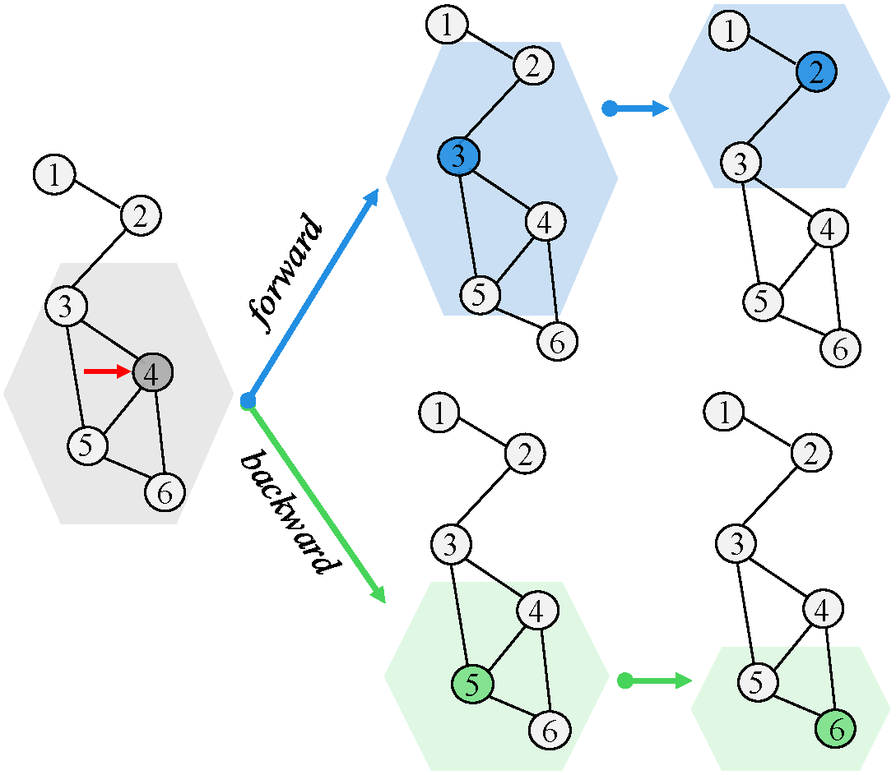

Teaching
Services
Publications
Home
Ruoyang Rykie Guo
Stevens Institute of Technology
Publications
[
Full List
]

2025
Threshold-Protected Searchable Sharing:
Privacy Preserving Aggregated-ANN Search for Collaborative RAG
Ruoyang Rykie Guo
(Tutorial is en route).
Highlight.
PDF
GridSE: Towards Practical Secure Geographic Search via Prefix Symmetric Searchable Encryption
Ruoyang Guo
, Jiarui Li, and Shucheng Yu
Usenix Security Symposium
(USENIX)
, 2024.
PDF
Code
Search geometric ranges efficiently as keywords over encrypted spatial data
Ruoyang Guo
, Bo Qin, Yuncheng Wu, Hong Chen, Cuiping Li
High-Confidence Computing, 2022.
PDF
LuxGeo: Efficient and Security-Enhanced Geometric Range Queries
Ruoyang Guo
, Bo Qin, Yuncheng Wu, Ruixuan Liu, Hong Chen, Cuiping Li
IEEE Transactions on Knowledge and Data Engineering
(TKDE)
, 2021
PDF
Enhanced privacy preserving group nearest neighbor search
Yuncheng Wu, Ke Wang,
Ruoyang Guo
, Zhilin Zhang, Dan Zhao, Hong Chen, Cuiping Li
IEEE Transactions on Knowledge and Data Engineering
(TKDE)
, 2019
PDF
Enhanced privacy preserving group nearest neighbor search
Ruoyang Guo
, Bo Qin, Yuncheng Wu, Ruixuan Liu, Hong Chen, Cuiping Li
IEEE/ACM International Symposium on Quality of Service
(IWQoS)
, 2019
PDF
Code